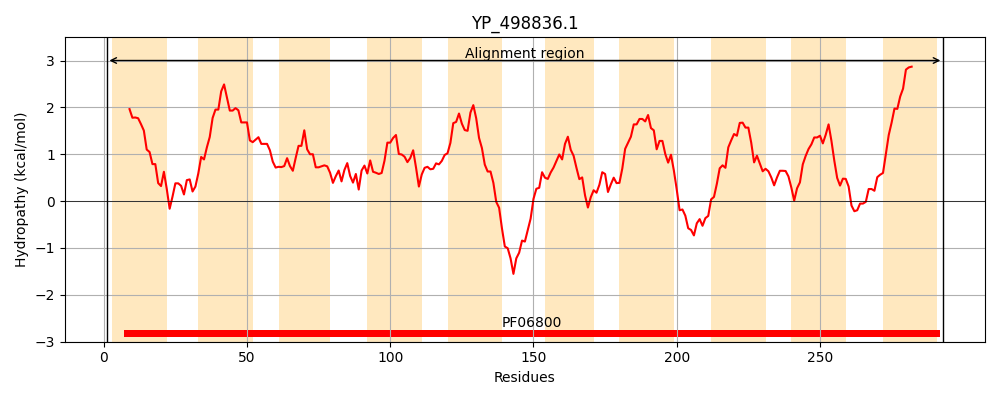
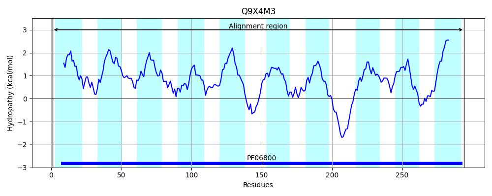
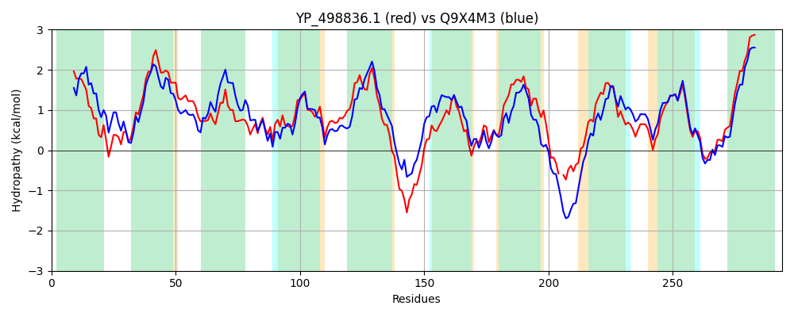

Hit Accession: Q9X4M3
Hit TCID: 2.A.7.5.2
Hit Description: gnl|BL_ORD_ID|19381 gnl|TC-DB|Q9X4M3|2.A.7.5.2 PUTATIVE RIBOSE TRANSPORTER RBSU - Lactobacillus sakei.
Mach Len: 294
e:0.000000
Query TMS Count : 10
Hit TMS Count: 10
TMS-Overlap Score: 8.900000
Predicted Substrates:CHEBI:10410;beta-D-ribopyranose
BLAST Alignment:
Score: 860 , Bit scores: 335 bits, E-value: 3.3e-116, Alignment length: 294, Percentage identity: 55
Query: 1 MSIVALLIGLGPLIGWGFFPTVASKFGGKPVHQIIGATVGTLIFAILLAVVTSSGFPTGTNLLFALLSGAGWGFGQIITFKAFELVGSSRAMPVTTAFQLLGASLWGVFALGNWPGIGHKIIGFTALVVILIGARMTVWSERKEASNAKNLRRAVVLLLIGEFGYWLYSAAPQATSIDGLTAFLPQAMGMVIVAVIYGFMNMKAE-NPFRNKITWLQIISGFFFAFGALTYLISAQPNMNGLATGFILSQTSVVLATLTGIYFLKQHKTSKEMVITIIGLVLILVAASVTVFIK 293
M+ V +LIGL P+IGWG FP + K GGKP QI+G T GTLI AI++A+ + P +F L+SGA W QIITF FE +G SR MP+TT FQL+GASLWGVF LGNW K+IGFTA+ +I+IG +T WSE K +++ + ++LLL+GE GY YSA PQA S DG FLPQA+GM IV +I+G K + PF+ ++ I SGFFFAF ALTYLISAQP++NGLATGF+LSQTSV+ AT+ GIY LK+ K+ KEM+ ++GL+L+LVA SVT FIK
Sbjct: 1 MNAVNILIGLMPMIGWGIFPVIVGKIGGKPASQILGTTFGTLILAIVVAIFRGTPIPETKTFIFCLISGACWALAQIITFHVFETMGVSRTMPITTGFQLVGASLWGVFVLGNWSSSQSKLIGFTAIALIIIGVYLTAWSEDKSSASKSGAVKGILLLLVGELGYLGYSAFPQAVSADGFQGFLPQAIGMTIVGIIFGLTQTKKDYKPFKEATSYKNIFSGFFFAFAALTYLISAQPSVNGLATGFVLSQTSVIFATIGGIYILKEKKSKKEMIAVMVGLLLVLVAGSVTAFIK 294 | Protein Hydropathy Plots: |
|---|
|  |  |
Pairwise Alignment-Hydropathy Plot:
|
|---|
|  |